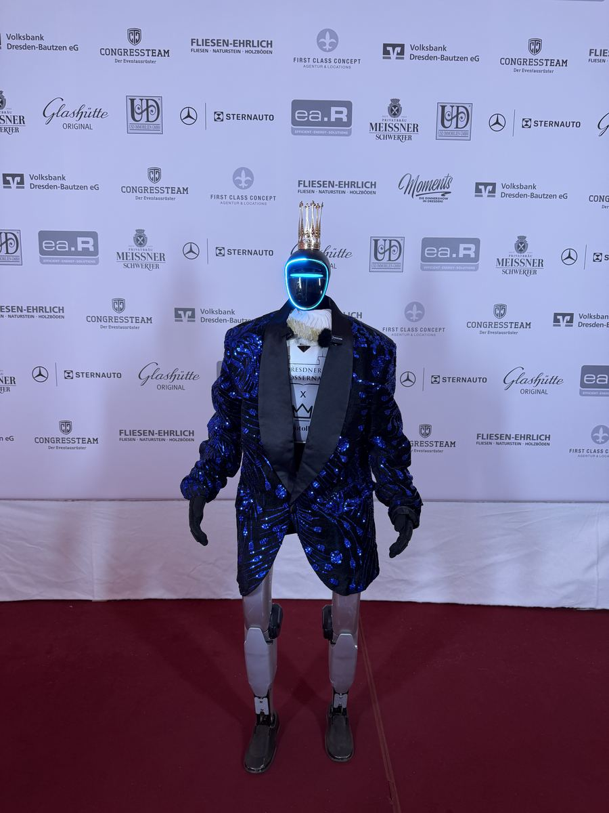

- Startseite
- Konferenzen & Galas
Konferenzen · Galas · Award-Abende
Roboter für Konferenzen und Galas
Auf einem Kongress gibt es drei gute Orte für einen humanoiden Roboter: das Foyer bei der Ankunft, die Bühne für ein paar Minuten und die Pausen zwischen den Vorträgen. Bei einer Gala kommt der Abend dazu.

Eine Konferenz hat ein dichtes Programm und wenig Platz für Showeinlagen. Ein Roboter, der den ganzen Tag im Mittelpunkt steht, würde stören. Deshalb planen wir ihn dort ein, wo er nicht mit den Vorträgen konkurriert, sondern die Lücken dazwischen füllt.
Drei Orte auf einem Kongress
Im Foyer, wenn die Gäste ankommen
Zwischen Eingang und Registrierung stehen die meisten Menschen herum und warten. Der Roboter begrüßt sie, gibt die Hand und lässt sich fotografieren. Ein Bild mit ihm ist oft das erste, das Teilnehmende von der Veranstaltung posten.
Auf der Bühne, für ein paar Minuten
Eine kurze Begrüßung vor der Keynote, eine Choreografie nach der Mittagspause oder eine Anmoderation für den nächsten Programmpunkt. Länger als fünf Minuten sollte so ein Moment nicht dauern, danach gehört die Bühne wieder den Speakern.
In den Pausen
Beim Kaffee bewegt sich der Roboter zwischen den Stehtischen. Er beantwortet Fragen, posiert mit Gruppen und gibt den Menschen ein Thema, über das sie mit Fremden ins Gespräch kommen.
Ein Kongresstag mit Roboter
- Vor dem Einlass: Aufbau, Probe des Bühnenwegs mit der Technik, letzte Abstimmung der Texte.
- Einlass und Registrierung: Empfang im Foyer.
- Eröffnung: kurzer Auftritt auf der Bühne, falls gewünscht.
- Vortragsblöcke: technische Pause, Akkuwechsel.
- Kaffee- und Mittagspausen: Unterwegs unter den Teilnehmenden.
- Abendprogramm: Fotos, Tanz oder Überleitung zur Preisverleihung.
Den genauen Ablauf passen wir an Ihr Programm an. Ein Kongress mit fünf parallelen Bühnen braucht eine andere Planung als eine Konferenz mit einem Saal.
Bei der Gala ist der Ton ein anderer
Am Abend geht es weniger um Information als um Atmosphäre. Der Roboter trägt dann kein Firmen-T-Shirt, sondern ein Branding passend zum Dresscode, empfängt die Gäste am Eingang und steht später für Fotos bereit. Zum Auftakt der Preisverleihung kann er einen kurzen Text sprechen, der zum Moderator überleitet.
Bei der Dresdner Schlössernacht war das genau so: Paillettensmoking, Krone, roter Teppich und danach ein Abend im Ballsaal unter den Gästen.

Wer sich um was kümmert
| Was | Wer kümmert sich |
|---|---|
| Roboter, Akkus, Ladegerät, Transport | 33bots |
| Operator während der ganzen Veranstaltung | 33bots |
| Texte für Begrüßung und Bühne | Entwurf von uns, Freigabe durch Sie |
| Branding | 33bots, nach Ihren Vorgaben |
| Fläche im Foyer, Steckdose, Weg zur Bühne | Sie oder die Location |
| Ton auf der Bühne | Ihre Veranstaltungstechnik, in Absprache mit uns |
Auf diesen Konferenzen war der Roboter dabei
Auf dem Women in Tech Summit im Warschauer EXPO XXI waren nach Angaben der Veranstalter rund 14.000 Menschen, verteilt auf fünf Bühnen und neun Themenzonen. Der Roboter war unter den Teilnehmenden unterwegs, begrüßte, posierte und kam zwischen den Vorträgen ins Gespräch.
Auf der 30. Konferenz WallStreet in Karpacz, dem größten Treffen von Privatanlegern in Polen, kamen 2.253 Teilnehmende zu über 100 Vorträgen. Der Roboter war dort zwischen den Programmpunkten im Einsatz.
Was nicht funktioniert
- Eine lange, frei gesprochene Keynote. Der Roboter spricht kurze, vorbereitete Texte und beantwortet Fragen, hält aber keinen Vortrag.
- Steile Bühnentreppen ohne Rampe. Hier finden wir mit Ihrer Technik vorab eine andere Lösung.
- Ein Einsatz ohne Operator in der Nähe. Unser Operator ist immer dabei.
Häufige Fragen
Bei der Ankunft im Foyer und in der ersten Pause. Auf der Bühne funktionieren kurze Momente von zwei bis fünf Minuten, etwa zur Eröffnung oder als Überleitung zur Preisverleihung.
Ja. Er spricht vorbereitete Texte, zum Beispiel eine Begrüßung oder eine Anmoderation. Den Text stimmen wir vorher mit Ihnen und der Moderation ab.
Für den Bühnenauftritt einen ebenen Weg auf die Bühne ohne steile Stufen und ein Mikrofon oder eine Tonverbindung, falls der Saal groß ist. Den Ablauf geht unser Operator vorab mit Ihrer Regie durch.
Ja, wenn er zum Abend gekleidet ist. Bei der Dresdner Schlössernacht trug er Paillettensmoking und Krone und empfing die Gäste auf dem roten Teppich.
Einen ganzen Kongresstag, in Blöcken mit kurzen Pausen für den Akkuwechsel. Die Pausen legen wir in die Vortragszeiten, wenn das Foyer ohnehin leer ist.